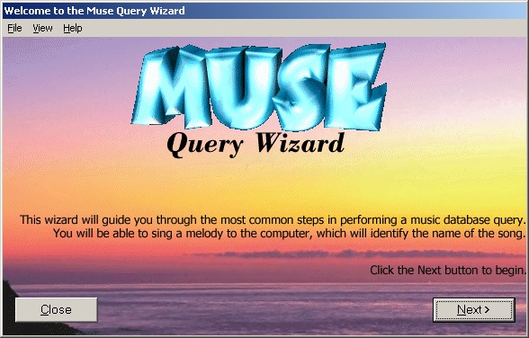

Back to my home page
Muse is a computer program for automatic song identification using an audio query. The user hums a few notes from a song; these are analyzed and searched for in a database. Muse was written as my graduation project during my BSc studies at the Technion, under the supervision of Gal Ashour of IBM.
All of the material relating to the Muse project is available for free download from this site, including the program source code. You are welcome to use this material as you see fit, but please give credit where due. If you do something neat with Muse, please let me know.
Here are a couple of screen shots from the program...

To use Muse, you need to download the executable (for use in Windows 95 and higher) and a song database. Naturally Muse will be able to identify only songs in the database you are using. The sample database we provide here contains some 230 songs, including many Beatles classics and some Hebrew songs. You can also construct your own database; let me know if you have a larger database that you'd like to put up in this site. Please note that identification is most efficient when you sing the notes as "ta-ta-ta" or "ti-ti-ti". You are not supposed to sing the words of the song; it is assumed that if the words are known, you do not need the program!
If you are a programmer and are curious to see how Muse works, you can download the entire source code. The program is based on MFC and is intended to be compiled under Visual C++ 5.
Here are some technical documents relating to the algorithms behind Muse.